Contents
Math modes
TeX was designed for ease of typesetting books that contained mathematics. As ConTeXt is built on top of TeX, it inherits all those features. In addition to these, ConTeXt adds lot of macros to make the typesetting of mathematics easier.
There are two kinds of math modes --- inline math and display math. Mathematical expressions that are written with the running text are called inline math; while mathematical expressions that break the flow of the text (such as formulas or equations) are called display math. TeX takes care of proper spacing around expressions and provides macros to typeset most mathematical constructs. Complicated expressions can be built by working in steps---break down the expression into sub-expressions, build the sub-expressions and then combine them to get the complicated expression.
The basics of typesetting math in ConTeXt is explained here.
Display math mode
Type \startformula to get display math mode, or \dm to get a inline typesetting but keeping display sizing and rules.
-
Let's start with an interesting infinite series: \startformula \sum_{n=1}^{\infty} \frac{1}{n^2} = \frac{\pi^2}{6} \stopformula The same series shown in display style inline \dm{\sum_{n=1}^{\infty} \frac{1}{n^2} = \frac{\pi^2}{6}}
- 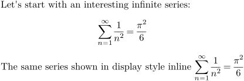
Inline math mode
There are four equivalent commands to get inline math mode: \$, \m, \math, \mathematics to get display inline math mode.
-
\startlines The result is $\sum_{n=1}^{\infty} \frac{1}{n^2} = \frac{\pi^2}{6}$. The result is \m{\sum_{n=1}^{\infty} \frac{1}{n^2} = \frac{\pi^2}{6}}. The result is \math{\sum_{n=1}^{\infty} \frac{1}{n^2} = \frac{\pi^2}{6}}. The result is \mathematics{\sum_{n=1}^{\infty} \frac{1}{n^2} = \frac{\pi^2}{6}}. \stoplines
- 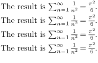
For examples $x$ gives
while $2$ gives
- 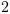
Notice that the x is in italic while the 2 is upright. This is the usual mathematic convention.
Numbering Formulae \startformula
ConTeXt provides an easy way to number the display maths equations. Simply, insert the \startformula in the \startplaceformula environment, and you will get numbered equations.
-
The famous result (once more) is given by \startplaceformula \startformula c^2 = a^2 + b^2 \stopformula \stopplaceformula
- 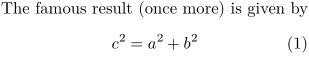
The \startplaceformula command is optional, and produces the equation number; leaving it off produces an unnumbered equation.
Referencing formulae \in and \at
Equations can be referred to by simply adding a label to \startplaceformula and using command for referencing :
- \ref (note that it expects two arguments, therefore you need the brackets twice),
- \in (a kind of \ref[number][TheRef] ,
- \at (a kind of \ref[page][TheRef] .
-
\setupinteraction[state=start] The famous result (once more) is given by \startplaceformula[eq:myref] % <===== here \startformula c^2 = a^2 + b^2 \stopformula \stopplaceformula And now we can refer to its number by several ways, \startitemize \item with \tex{in} : formula \in[eq:myref] or \in{formula}{}[eq:myref] \item with \tex{at} : formula \in[eq:myref] \at{page}[eq:myref] \item with \tex{ref} : formula \ref[number] [eq:myref] page \ref[number] [eq:myref] \stopitemize
This, when typeset, produces the following:
- 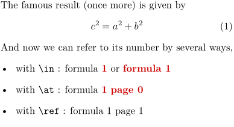
By default, only the formula number appears as a reference. This can be changed by using \definereferenceformat. For example, to create a command \eqref which shows the formula number in brackets, use
-
\setupinteraction[state=start] \definereferenceformat[eqref][left=(,right=)] The famous result (once more) is given by \startplaceformula[eq:myref] \startformula c^2 = a^2 + b^2 \stopformula \stopplaceformula And now we can refer to its number by several ways, \startitemize \item with \tex{in} : formula \in[eq:myref] or \in{formula}{}[eq:myref], \item with \tex{at} : formula \in[eq:myref] \at{page}[eq:myref], \item with \tex{ref} : formula \ref[number] [eq:myref] page \ref[number] [eq:myref], \item with \tex{eqref} : formula \eqref[eq:myref]. \stopitemize
This, when typeset, produces the following:
- 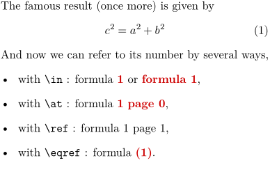
Sub-Formulae with \startsubformulas and \startalign
To use subformula numbering, you have to use \startsubformulas/\stopsubformulas and \startalign. For example
-
The famous result (once more) is given by Examples: \definereferenceformat[eqref][left=(,right=)] \startsubformulas[eq:total] \startplaceformula \startformula \startalign \NC a^2 + b^2 \NC = c^2 \NR[eq:first] \NC a^2 + b^2 \NC = c^2 \NR[eq:second] \stopalign \stopformula \stopsubformulas \stopplaceformula Formula \eqref[eq:total] states the Pythagora's Theorem twice, once in \eqref[eq:first] and again in \eqref[eq:second]. You can compare without \tex{startsubformulas}: \startplaceformula \startformula \startalign \NC a^2 + b^2 \NC = c^2 \NR[eq2:first] \NC a^2 + b^2 \NC = c^2 \NR[eq2:second] \stopalign \stopformula \stopplaceformula We now have references for \eqref[eq2:first] and \eqref[eq2:second].
This, when typeset, produces the following:
- 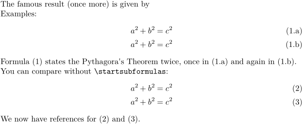
Combination of formulae with \startformulas
To use subformula numbering, you have to use \startsubformulas/\stopsubformulas and \startalign. For example
-
\definereferenceformat[eqref][left=(,right=)] The famous result (once more) is given by \startsubformulas[eq:total] \startplaceformula \startformulas \startformula \startalign \NC a^2 + b^2 \NC = c^2 \NR[eq:first] \NC a^2 + b^2 \NC = c^2 \NR[eq:second] \stopalign \stopformula \startformula \startalign \NC a^2 + b^2 \NC = c^2 \NR[eq:third] \NC a^2 + b^2 \NC = c^2 \NR[eq:forth] \stopalign \stopformula \stopformulas \stopplaceformula \stopsubformulas We now have references for \eqref[eq:forth] for example.
This, when typeset, produces the following:
- 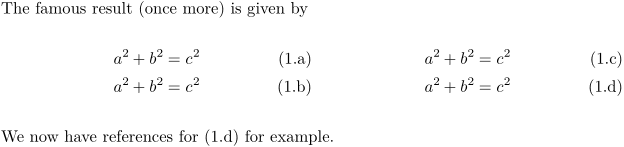
List of Formulae with \placelist
Since MKIV there are two types of formulas: numbered and named. Numbered formulas have the number as a reference and caption next to the formula and are listed only with the number and pagenumber in the list of formulas. Named formulas use the name as the caption instead of a number and are referenced with the name and pagenumber in the list of formulas.
-
2 examples: % no reference ==> no entry in the list of formulas \startplaceformula \startformula e=mc^2 \stopformula \stopplaceformula % a reference ==> entry in the list of formulas \startplaceformula [reference=formula:mass1] % <====== here \startformula e=mc^2 \stopformula \stopplaceformula This is the list: \placelist[formula][criterium=all,alternative=c]
- 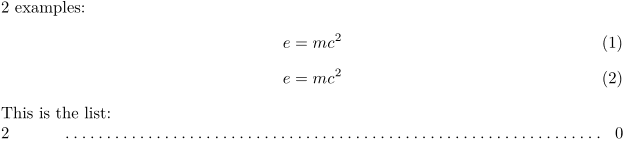
\startplaceformula comes with the following key options: bookmark, list, reference, suffix, title. The title option changes the formula to a named formula (no number).
-
3 examples: % a reference + list ==> entry with number + additional text in the list \startplaceformula [reference=formula:mass2, list={Mass-energy equivalence from list option}] \startformula e=mc^2 \stopformula \stopplaceformula % a reference + title ==> entry with title text, no number \startplaceformula [title={Mass-energy equivalence}, % <====== here reference=formula:mass3] \startformula e=mc^2 \stopformula \stopplaceformula % a reference + title + list ==> entry with list text, no number \startplaceformula [title={Mass-energy equivalence}, % <====== here reference=formula:mass4, list={Mass-energy equivalence from list option}] \startformula e=mc^2 \stopformula \stopplaceformula This is the list: \placelist[formula][criterium=all,alternative=c]
- 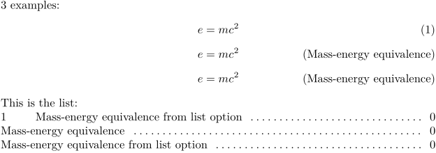
Formating with \setupformulas
Format of numbers
You can use \setupformulas to change the format of numbers. For example to get bold numbers inside square brackets use
-
The famous result (once more) is given by \setupformulas [left={[}, right={]}, numberstyle=bold] \startplaceformula \startformula c^2 = a^2 + b^2 \stopformula \stopplaceformula
This, when typeset, produces the following:
- 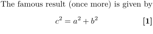
To get equations also numbered by section,
use the command \setupnumbering \setupnumbering[way=bysection] in the preamble of your document.
This means that the section number preceeds the formula number.
Add also \setupnumber \setupnumber[formula][way=bysection] to reset with each new section.
-
The famous result (once more) is given by \setupformulas [left={[}, right={]}, numberstyle=bold] \setupnumbering [way=bysection] % to add the section number to the formula number \setupnumber [formula] [way=bysection] % to reset with each new section \startsection[title=First title] \startplaceformula \startformula c^2 = a^2 + b^2 \stopformula \stopplaceformula \stopsection \startsection[title=Second title] \startplaceformula \startformula c^2 = a^2 + b^2 \stopformula \stopplaceformula \stopsection
This, when typeset, produces the following:
- 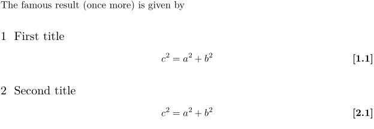
To get alphabets instead of numbers, use again \setupformulas
-
The famous result (once more) is given by \setupformulas[numberconversion=Character] \startplaceformula \startformula c^2 = a^2 + b^2 \stopformula \stopplaceformula \setupformulas[numberconversion=character] \startplaceformula \startformula c^2 = a^2 + b^2 \stopformula \stopplaceformula
This, when typeset, produces the following:
- 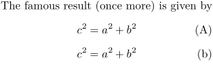
Formula alignment
Normally a formula is centered, but in case you want to align it left or right, you can set up formulas to behave that way. Normally a formula will adapt its left indentation to the environment:
-
\setuppapersize[A8,landscape] \starttext This is a bit of text for purpose of example. \startitemize \item This is some other example text. \startplaceformula \startformula c^2 = a^2 + b^2 \stopformula \stopplaceformula \item This is yet other example text. \stopitemize This is a bit more text for other purpose of example. \stoptext
- 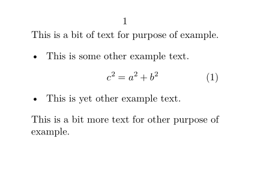
In the next examples we explicitly align formulas with \setupformulas, to the left (raggedleft), center (middle, and right (raggedright):
-
\setuppapersize[A8,landscape] \starttext \setupformulas[align=left] \startformula c^2 = a^2 + b^2 \stopformula \setupformulas[align=middle] \startformula c^2 = a^2 + b^2 \stopformula \setupformulas[align=right] \startformula c^2 = a^2 + b^2 \stopformula \stoptext
- 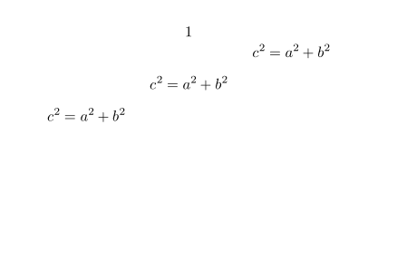
With formula numbers the code is:
-
\setuppapersize[A8,landscape] \starttext \setupformulas[align=flushleft] \startplaceformula \startformula c^2 = a^2 + b^2 \stopformula \stopplaceformula \setupformulas[align=middle] \startplaceformula \startformula c^2 = a^2 + b^2 \stopformula \stopplaceformula \setupformulas[align=flushright] \startplaceformula \startformula c^2 = a^2 + b^2 \stopformula \stopplaceformula \stoptext
- 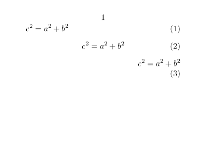
When tracing is turned on (\showboxes) you can visualize the bounding box of the formula,
-
\setuppapersize[A8,landscape] \starttext The famous result (once more) is given by \showboxes \startplaceformula \startformula c^2 = a^2 + b^2 \stopformula \stopplaceformula \stoptext
-

As you can see, the dimensions are the natural ones, but if needed you can force a normalized line:
-
\setuppapersize[A8,landscape] \starttext The famous result (once more) is given by \showboxes \setupformulas[align=middle,strut=yes] \startplaceformula \startformula c^2 = a^2 + b^2 \stopformula \stopplaceformula \stoptext
This time we get a more spacy result. [Ed. Note: For this example equation, there appears to be no visible change.]
-

You can influence the placement of the whole box with the parameters leftmargin and rightmargin.
-
\setuppapersize[A8,landscape] \starttext The famous result (once more) is given by \showboxes \setupformulas[align=right,leftmargin=1em] \startplaceformula \startformula c^2 = a^2 + b^2 \stopformula \stopplaceformula \setupformulas[align=right,leftmargin=3em] \startplaceformula \startformula c^2 = a^2 + b^2 \stopformula \stopplaceformula \setupformulas[align=left,rightmargin=1em] \startplaceformula \startformula c^2 = a^2 + b^2 \stopformula \stopplaceformula \stoptext
- 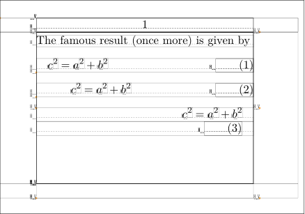
You can also inherit the margin from the environment.
-
\setuppapersize[A8,landscape] \starttext Some example text, again, to show where the right and left margins of the text block are. \showboxes \setupformulas[align=right] \startplaceformula \startformula c^2 = a^2 + b^2 \stopformula \stopplaceformula \setupformulas[align=right,margin=standard] \startplaceformula \startformula c^2 = a^2 + b^2 \stopformula \stopplaceformula \stoptext
- 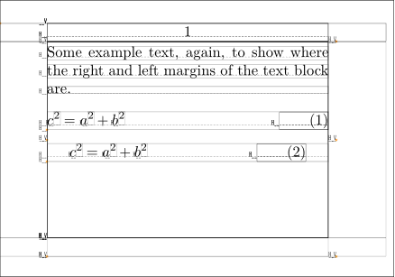
The distance between the formula and the number is only applied when the formula is left or right aligned.
-
\setuppapersize[A8,landscape] \starttext Some example text, again, to show where the right and left margins of the text block are. \showboxes \setupformulas[align=left,distance=2em] \startplaceformula \startformula c^2 = a^2 + b^2 \stopformula \stopplaceformula \stoptext
- 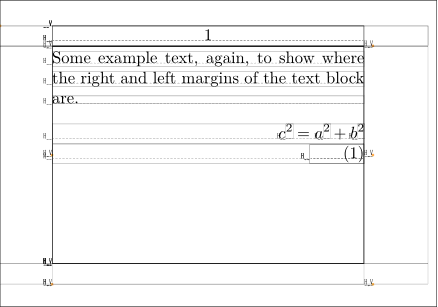
Shaded background for part of a displayed equation
(see also Frames)
One may define a specific framed command, for example coloredmath, with \definemathframed.
-
\setuppapersize[A8,landscape] \definemathframed[coloredmath] [ frame=off, location=mathematics, background=color, backgroundcolor=lightcyan, backgroundoffset=1pt ] \starttext Since for $|x| < 1$ we have \startformula \log(1+x) = \coloredmath{x- \displaystyle{x^2\over2}} + {x^3 \over 3} + \cdots \stopformula we may write $\log(1+x) = x + O(x^2)$. \stoptext
- 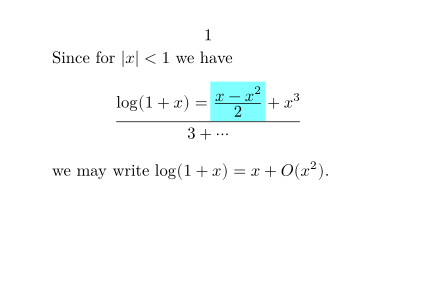
Formatting numbers and units
Formatting numbers uses \digits, \setdigitmode and \setdigitorder.
See
- Units manual (2015).
- Pasting digits together ThisWay manual (2003)
- PhysML (MathML extension for physics) by Pragma
- Units
-
\usemodule[units] \setuppapersize[A8,landscape] \setdigitmode {1} \starttext This will never be a \digits{1,000,000} seller. \blank[line] I will never grow longer than \digits{1.86} \unit{m}. \stoptext
- 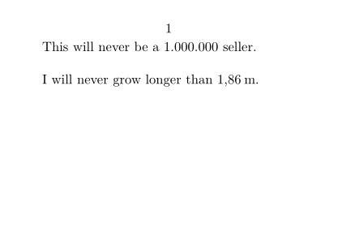
-
\startlines 10 \setdigitmode {1} \setdigitorder{0} \digits {12,345.90} 20 \setdigitmode {2} \setdigitorder{0} \digits {12,345.90} 30 \setdigitmode {3} \setdigitorder{0} \digits {12,345.90} 40 \setdigitmode {4} \setdigitorder{0} \digits {12,345.90} 50 \setdigitmode {5} \setdigitorder{0} \digits {12,345.90} 60 \setdigitmode {6} \setdigitorder{0} \digits {12,345.90} 11 \setdigitmode {1} \setdigitorder{1} \digits {12,345.90} 21 \setdigitmode {2} \setdigitorder{1} \digits {12,345.90} 31 \setdigitmode {3} \setdigitorder{1} \digits {12,345.90} 41 \setdigitmode {4} \setdigitorder{1} \digits {12,345.90} 51 \setdigitmode {5} \setdigitorder{1} \digits {12,345.90} 61 \setdigitmode {6} \setdigitorder{1} \digits {12,345.90} \stoplines
- 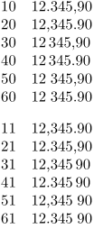
Notes
Evaluating expressions in ConTeXt
See also Evaluation of expressions (i.e. doing math).
Note to Plain TeX Users
ConTeXt is plain TeX compatible. So, if you have any old document written in plain TeX, it will work with ConTeXt. This does not mean that you will get pixel by pixel identical output with ConTeXt. For inline math, everything that you learnt for plain TeX is also true for ConTeXt. However, display math is significantly different. Do not use $$ .... $$ to write display math formulas in ConTeXt, since you will not get the correct spacing around the formulas. Instead use \startformula and \stopformula.
Note to AMSTeX/LaTeX Users
ConTeXt offers almost all the features that are present in AMSTeX and LaTeX. However, ConTeXt syntax is different. See this My Way for how to 'translate' from amsmath syntax to ConTeXt syntax. LaTeX Math in ConTeXt gives some brief ideas on how to get the LaTeX syntax to run in ConTeXt.
Other Methods
- The "native" ConTeXt way of math is MathML , an application of XML - rather verbose but mighty.
- There are two different math modules on CTAN , nath and amsl . And there's a new math module in the distribution.
- It is also possible to use most LaTeX equations in ConTeXt with a relatively small set of supporting definitions.
To do
- dots
- Arrows (see MyWay article Math Arrows ) broken link. Math Arrows (wiki copy)